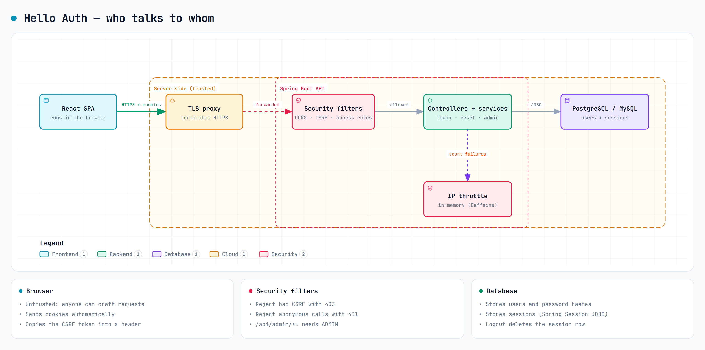

JUNIOR DEV asks
Can two config files tell us if the app is secure?
SENIOR DEV explains
They tell us the rules, not the whole story. The React app runs in the browser and sends cookies to the Spring Boot API. Spring Security filters every request first. Then controllers and services do the real work: login, throttling, password reset and admin actions. Sessions live in the database.

In the code: SecurityConfig sets up the filters. AuthController saves the login. application-prod.yml overrides the defaults when the prod profile is on.
Not covered by these files: the proxy, database permissions and the headers sent by whatever hosts the frontend. Those need their own checks.
Treat the config as a map, not a certificate. A comment in the code explains intent; it does not prove the deployed system matches it.
Inspect the evidence · observed source
SecurityConfig.java · L80–96
implementation · backend/src/main/java/com/example/helloauth/config/SecurityConfig.java · 01efc8ed1560
SecurityFilterChain securityFilterChain(HttpSecurity http,
CsrfTokenRepository csrfTokenRepository,
SecurityContextRepository securityContextRepository) throws Exception {
http
.cors(Customizer.withDefaults())
// Synchronizer Token pattern (OWASP CSRF cheat sheet): the token
// is stored in the session and compared against the header. Not
// csrf.spa() — that installs the cookie (naive double-submit)
// repository. The repository bean is shared with
// CsrfAuthenticationStrategy and CsrfLogoutHandler.
.csrf(csrf -> csrf
.csrfTokenRepository(csrfTokenRepository)
.csrfTokenRequestHandler(new XorCsrfTokenRequestAttributeHandler()))
.securityContext(context ->
context.securityContextRepository(securityContextRepository))
// Defense-in-depth headers (security-review F-01). This is a
// JSON-only API — no HTML, script, or frame rendering — so theapplication-prod.yml · L34–79
configuration · backend/src/main/resources/application-prod.yml · 01efc8ed1560
spring:
# No embedded fallback. Use jdbc:postgresql://... or jdbc:mysql://... .
# The JDBC driver and Hibernate dialect are inferred from the URL.
datasource:
embedded-database-connection: none
url: ${DB_URL}
username: ${DB_USERNAME}
password: ${DB_PASSWORD}
jpa:
hibernate:
ddl-auto: validate
liquibase:
enabled: true
change-log: classpath:db/changelog/db.changelog-master.yaml
session:
jdbc:
initialize-schema: never
sql:
init:
mode: never
h2:
console:
enabled: false
server:
forward-headers-strategy: framework
servlet:
session:
cookie:
secure: true
http-only: true
same-site: strict
app:
cors:
allowed-origins: ${APP_CORS_ALLOWED_ORIGINS:}
password-reset:
log-reset-link: false
# No localhost fallback — the day a real EmailService replaces the stub,
# an unset value must not silently emit reset links pointing at
# localhost:3000.
link-base-url: ${APP_RESET_LINK_BASE_URL:}
admin:
username: ${APP_ADMIN_USERNAME:}
password: ${APP_ADMIN_PASSWORD:}
email: ${APP_ADMIN_EMAIL:admin@localhost}AuthController.java · L89–122
implementation · backend/src/main/java/com/example/helloauth/auth/AuthController.java · 01efc8ed1560
@PostMapping("/login")
public ResponseEntity<?> login(@Valid @RequestBody LoginRequest request,
HttpServletRequest servletRequest, HttpServletResponse servletResponse) {
Authentication authentication;
try {
// LoginService runs the ordered two-layer defense: IP-throttle →
// account-lock → credentials (ticket 11). A throttled source gets
// LoginThrottledException — not an AuthenticationException — so it
// falls through to the 429 handler in ApiExceptionHandler.
authentication = loginService.login(
request.username(), request.password(), servletRequest.getRemoteAddr());
} catch (AuthenticationException ex) {
// One generic message for every failure mode — bad credentials,
// locked, disabled — so account existence can't be inferred
// (enumeration resistance is a security AC, not a nicety).
ProblemDetail problem = ProblemDetail.forStatusAndDetail(
HttpStatus.UNAUTHORIZED, "Invalid username or password.");
problem.setTitle("Login failed");
return ResponseEntity.status(HttpStatus.UNAUTHORIZED).body(problem);
}
sessionAuthenticationStrategy.onAuthentication(
authentication, servletRequest, servletResponse);
SecurityContext context = securityContextHolderStrategy.createEmptyContext();
context.setAuthentication(authentication);
securityContextHolderStrategy.setContext(context);
securityContextRepository.saveContext(context, servletRequest, servletResponse);
return ResponseEntity.ok(
new PrincipalResponse(authentication.getName(), roleOf(authentication)));
}
/**api.ts · L11–38
implementation · frontend/src/lib/api.ts · 01efc8ed1560
export const API_BASE: string =
import.meta.env.VITE_API_BASE ?? 'http://localhost:8080'
/** In-memory CSRF token for the current server session; null until fetched. */
let csrfToken: string | null = null
/** Problem title the API uses for a missing/invalid CSRF token (403). */
const CSRF_REJECTED_TITLE = 'Invalid CSRF token'
function isMutating(method: string): boolean {
return method !== 'GET' && method !== 'HEAD' && method !== 'OPTIONS'
}
/** True when a 403 is the API's CSRF rejection, not an authorization denial. */
async function isCsrfRejection(response: Response): Promise<boolean> {
if (response.status !== 403) {
return false
}
try {
const body = (await response.clone().json()) as { title?: string }
return body.title === CSRF_REJECTED_TITLE
} catch {
return false
}
}
function send(path: string, init: RequestInit, method: string): Promise<Response> {
const headers = new Headers(init.headers)